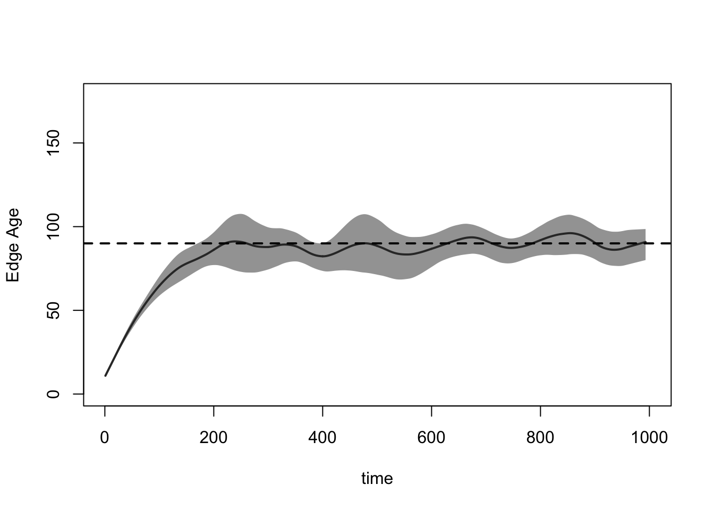
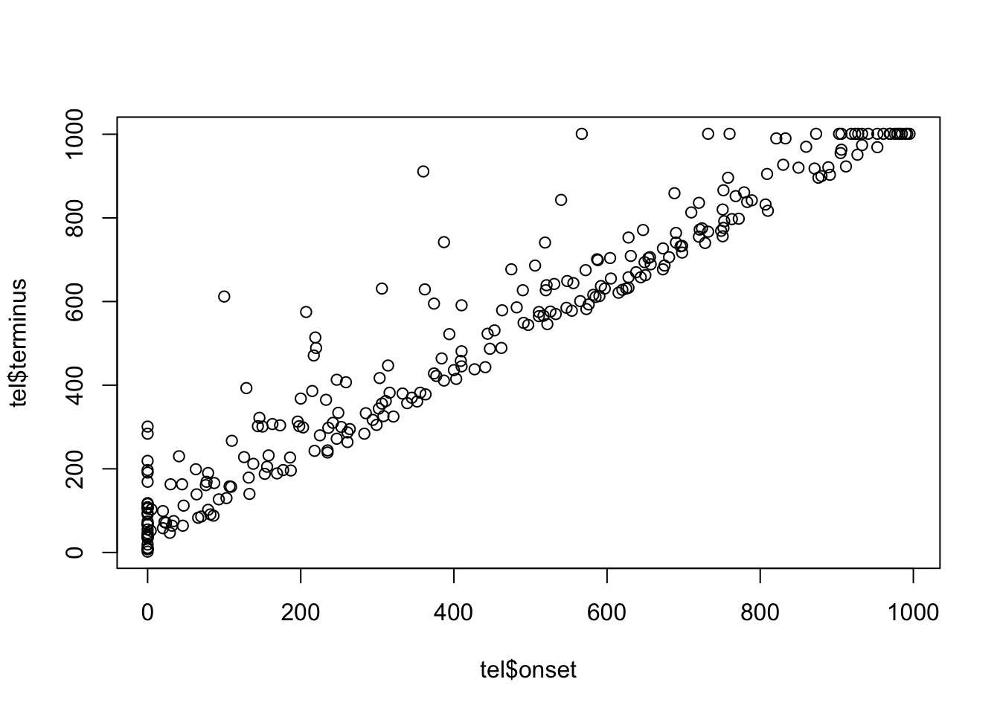
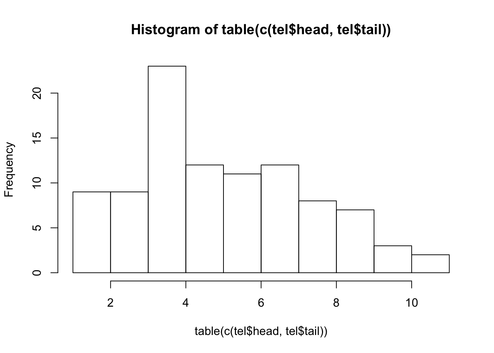

Tutorial 2: Dynamic Network Modeling with STERGMs in EpiModel
Day 1 | Network Models and HIV/STI with EpiModel | Harvard 2017
Tutorial by Martina Morris, Steven M. Goodreau and Samuel M. Jenness. Based on packages developed by the statnet Development Team.
Set-up
Set the seed for reproducability, if you wish:
set.seed(0)and load the EpiModel package, which automatically loads all of the other statnet packages we need:
library(EpiModel)Scenario 1: MSM Networks
Imagine that we wish to model networks of “men who have sex with men” (MSM) in steady partnerships, with the ultimate goal of exploring HIV dynamics in this population.
We collect egocentric data that suggest that:
- The average MSM is in 0.4 ongoing partnerships
- The average ongoing partnership lasts 90 time steps.
We wish to start simply by just generating a dynamic network that retains these two features on average over time, and is otherwise random.
Model Parameterization
We begin by creating an empty network (i.e. a network with no edges) but with nodes. For now, we will make all the nodes the same, i.e. without any individual nodal attributes. Let us say that we wish to do our simulations on a dynamic network with 100 nodes.
net1 <- network.initialize(100, directed = FALSE)Now, we need to identify the terms for our relational model. This is easy: since we are considering a purely homogeneous process right now, the only term in the formation model is ~edges. Indeed, dissolution is also purely homogeneous, so it is also ~edges.
Now, we need to calculate our target statistic for the formation model, i.e. the number of edges we expect in the network on average. The answer is:
\[\frac{(100)(0.4)}{2} = 20\]
Why did we divide by two?
Now, to estimate the coefficients for our model–both formation and dissolution–we turn to EpiModel, and specifically, the netest function.
We will estimate our formation and dissolution models sequentially; first the dissolution model, and then the formation model conditional on the dissolution model. To do the former, we use the dissolution.coefs function, passing in the dissolution model terms and the durations associated with it. Note that, we need a way to let the formation estimation know that the dissolution model will consist of a fixed parameter rather than one to be estimated. In EpiModel (and in R more generally) this is done by placing a model term inside the function offset().
coef.diss.1 <- dissolution_coefs(~offset(edges), 90)
coef.diss.1Dissolution Coefficients
=======================
Dissolution Model: ~offset(edges)
Target Statistics: 90
Crude Coefficient: 4.488636
Mortality/Exit Rate: 0
Adjusted Coefficient: 4.488636For now, do not worry about the adjusted coefficient and the death rate; we will return to these down the road once we’ve added vital dynamics to our models. But notice that the dissolution coefficient that is returned by this function equals \(ln(90-1)\).
Model Fitting
Now we fit our formation model conditional on this:
fit1 <- netest(net1,
formation = ~edges,
target.stats = 20,
coef.diss = coef.diss.1)Querying the contents of fit1 with the summary command provides us an overview of the model fit:
summary(fit1)
==========================
Summary of model fit
==========================
Formula: nw ~ edges
<environment: 0x7ff3cc3e00d0>
Iterations: 7 out of 20
Monte Carlo MLE Results:
Estimate Std. Error MCMC % p-value
edges -5.507 0.224 0 <1e-04 ***
---
Signif. codes: 0 '***' 0.001 '**' 0.01 '*' 0.05 '.' 0.1 ' ' 1
Log-likelihood was not estimated for this fit.
To get deviances, AIC, and/or BIC from fit `object$fit` run
> object$fit<-logLik(object$fit, add=TRUE)
to add it to the object or rerun this function with eval.loglik=TRUE.
Dissolution Coefficients
=======================
Dissolution Model: ~offset(edges)
Target Statistics: 90
Crude Coefficient: 4.488636
Mortality/Exit Rate: 0
Adjusted Coefficient: 4.488636But of course what we really want to know is whether a dynamic network simulated from this model retains the cross-sectional structure and relational durations that we asked it to. To check this, we use the netdx (“net diagnostics”) command to both conduct the simulation and compile the results for comparison to our expectations. We will include a flag to keep the “timed edgelist”, a means for storing data on every edge in the network over time in a data.frame. This is FALSE by default since it can become very large for long simulations, and is not generally needed when only looking to confirm that the sufficient statistics are matched. Here it is worth getting a sense of its contents.
Model Simulation
sim1 <- netdx(fit1, nsteps = 1000, nsims = 10,
keep.tedgelist = TRUE)
Network Diagnostics
-----------------------
- Simulating 10 networks
|**********|
- Calculating formation statistics
- Calculating duration statistics
|**********|
- Calculating dissolution statistics
|**********|
Does our formation model lead to a dynamic network that stochastically captures our target statistic of 20 edges in the cross-section? We can get an overview by printing the simulated object:
sim1EpiModel Network Diagnostics
=======================
Diagnostic Method: Dynamic
Simulations: 10
Time Steps per Sim: 1000
Formation Diagnostics
-----------------------
Target Sim Mean Pct Diff Sim SD
edges 20 19.856 -0.007 4.238
Dissolution Diagnostics
-----------------------
Target Sim Mean Pct Diff Sim SD
Edge Duration 90.000 78.925 -0.123 79.464
Pct Edges Diss 0.011 0.011 0.014 0.024And we can get a visual sense of the network structure over time with:
plot(sim1, type = "formation")
And of the relational durations with:
plot(sim1, type = "duration")
We note a period of “ramping up” at the beginning. Why is this?
An equivalent way to examine the dissolution model that is not subject to the ramping up is with:
plot(sim1, type = "dissolution")
Finally, we look at the first few rows of the timed edgelist, out of curiosity:
sim1$tedgelist[[1]][1:5,] onset terminus tail head onset.censored terminus.censored duration
1 0 108 84 5 TRUE FALSE 108
2 0 2 59 8 TRUE FALSE 2
3 0 11 57 9 TRUE FALSE 11
4 0 118 66 11 TRUE FALSE 118
5 0 8 47 12 TRUE FALSE 8
edge.id
1 1
2 2
3 3
4 4
5 5One can choose to explore this further in a host of ways. Can you identify what each query is doing?
tel <- sim1$tedgelist[[1]]
hist(tel$duration)
mean(tel$duration[tel$onset < 100])[1] 80.18519sum(tel$terminus.censored == TRUE)[1] 22plot(tel$onset, tel$terminus)
table(c(tel$head,tel$tail))
1 2 3 4 5 6 7 8 9 10 11 12 13 14 15 16 17 18
6 4 6 11 5 4 7 7 3 7 7 8 8 5 9 7 2 4
20 21 23 25 26 27 28 29 30 31 32 33 34 35 36 37 38 39
4 4 4 4 6 6 3 4 6 2 9 7 5 4 9 4 9 4
40 41 42 43 44 45 46 47 48 49 50 51 52 53 54 55 56 57
1 7 8 1 5 3 3 5 8 5 3 2 5 5 8 7 10 10
58 59 60 61 62 63 64 65 66 67 68 69 71 72 73 74 75 76
7 4 9 6 4 3 5 4 6 8 5 9 4 4 8 8 9 3
77 78 79 80 81 82 83 84 85 86 87 88 89 90 91 92 93 94
6 6 3 2 5 7 6 11 4 1 4 2 6 4 4 4 1 4
95 96 97 98 99 100
10 7 7 4 3 5 hist(table(c(tel$head,tel$tail)))
You may also wish to examine the network at specific time points, or visualize the entire network with a dynamic plot. These features are not available for the netdx command specifically, but we will be able to use them tomorow when we begin with epidemic simulation on the networks.
Scenario 2: Modifying Network Size
What if instead we had done a network of 1000, but with the same observed data? What values would we need to change in our calls? (Note: from now on, we will simplify our calls somewhat and save ourselves a step by nesting the dissolution call directly inside the formation one.)
net2 <- network.initialize(1000, directed = FALSE)
fit2 <- netest(net2,
formation = ~edges,
target.stats = 200,
coef.diss = dissolution_coefs(~offset(edges), 90))
sim2 <- netdx(fit2, nsteps = 1000, nsims = 10, keep.tedgelist = TRUE)
Network Diagnostics
-----------------------
- Simulating 10 networks
|**********|
- Calculating formation statistics
- Calculating duration statistics
|**********|
- Calculating dissolution statistics
|**********|
plot(sim2, type = "formation")
plot(sim2, type = "duration")
plot(sim2, type = "dissolution")
Lesson learned from Scenario 2: remember to change your target stats when you change your network size. Better yet, make your target stats functions of your network size instead of fixed values!
Scenario 3: Adding ERGM Terms
Now we want to ramp up the complexity of our model a bit. For example, let us imagine we wish to control aspects of the momentary degree distribution, as well as race mixing. Conveniently, we happen to be working in a community in which 50% of MSM are Black and 50% are White. And our egocentric partnership data say:
- There are no significant differences in the distribution of momentary degree (the number of ongoing partnerships at one point in time) reported by Black vs. White men. The mean is 0.90, and the overall distribution is:
- 36% degree 0
- 46% degree 1
18% degree 2+
83.3% (i.e. 5/6) of relationships are racially homogeneous
We also have data (from these same men, or elsewhere) that tell us that the mean duration for a racially homogenous relationship is 100 weeks, while for a racially mixed one it is 200 weeks. Perhaps this is because the social pressure against cross-race ties makes it such that those who are willing to enter them are a select group more committed to their relationships.
Model Parameterization
The size of the network we wish to simulate is again arbitrary; let us pick 500. Our first step, then, is to create a 500-node undirected network, and assign the first half of the nodes to race “B” and the second to race “W”.
n <- 500
net3 <- network.initialize(n, directed = FALSE)
net3 %v% "race" <- c(rep("B", n/2), rep("W", n/2))
net3 Network attributes:
vertices = 500
directed = FALSE
hyper = FALSE
loops = FALSE
multiple = FALSE
bipartite = FALSE
total edges= 0
missing edges= 0
non-missing edges= 0
Vertex attribute names:
race vertex.names
No edge attributesform.formula.3 <- ~edges + nodematch("race") + degree(0) + concurrent
target.stats.3 <- c(0.9*n/2, (0.9*n/2)*(5/6), 0.36*n, 0.18*n)How did we get those expressions? Why don’t we specify degree(1) as well?
Now we turn to dissolution. This is complicated slightly by the fact that our dissolution probabilities differ by the race composition of the members. One dissolution formula for representing this is:
diss.formula.3 <- ~offset(edges) + offset(nodematch("race"))And fortunately, dissolution_coef is able to handle this model, as one can see by visiting its help page:
?dissolution_coefsModel Fitting
We also see there that it expects us to pass our durations in the order [mean edge duration of non-matched dyads, mean edge duration of matched dyads]. For us this means c(200, 100). Thus:
fit3 <- netest(net3,
formation = form.formula.3,
target.stats = target.stats.3,
coef.diss = dissolution_coefs(~offset(edges) + offset(nodematch("race")),
c(200, 100)))Unable to match target stats. Using MCMLE estimation.Model Simulation
And simulate:
sim3 <- netdx(fit3, nsteps = 1000, nsims = 10, keep.tedgelist = TRUE)
Network Diagnostics
-----------------------
- Simulating 10 networks
|**********|
- Calculating formation statistics
- Calculating duration statistics
|**********|
- Calculating dissolution statistics
|**********|
We query the object as before to see if it worked:
sim3EpiModel Network Diagnostics
=======================
Diagnostic Method: Dynamic
Simulations: 10
Time Steps per Sim: 1000
Formation Diagnostics
-----------------------
Target Sim Mean Pct Diff Sim SD
edges 225.0 227.257 0.010 13.213
nodematch.race 187.5 190.286 0.015 12.486
degree0 180.0 178.134 -0.010 13.019
concurrent 90.0 91.705 0.019 9.935
Dissolution Diagnostics
-----------------------
Target Sim Mean Pct Diff Sim SD
Edge Duration 2e+02 94.312 -0.528 94.097
Pct Edges Diss 5e-03 0.009 0.824 0.006
-----------------------
* Heterogeneous dissolution model results averaged overAlas, we see that for now the functionality does not disaggregate the different kinds of partnerships for the duration. Let’s try the plots instead:
plot(sim3, type = "formation") Nice.
Nice.
plot(sim3, type = "duration")Error: Duration plots for heterogeneous dissolution models not currently available Still no luck. This is not available as an automatic feature, so instead we will need to do this by hand. In order to minimize censoring, let us look at the final duration of all relationships that began within the first 100 time steps of the simulation, and divide these by race composition:
race <- net3 %v% "race"
tel3 <- sim3$tedgelist[[1]]
mean(tel3$duration[(race[tel3$tail] != race[tel3$head]) & tel3$onset < 100])[1] 224.0889mean(tel3$duration[(race[tel3$tail] == race[tel3$head]) & tel3$onset < 100])[1] 93.31818The model appears to be accurately separating out race-homogeneous and race-heterogeneous ties for different dissolution probabilities, all while maintaining the correct cross-setional structure.
Scenario 4: Full STERGM
Now let us imagine that our relationship durations are much shorter; we repeat the last model, but instead this time have 10 and 20 timesteps.
You might think that we simply need to change the code to reflect these new durations:
fit4 <- netest(net3,
formation = form.formula.3,
target.stats = target.stats.3,
coef.diss = dissolution_coefs(~offset(edges)+offset(nodematch("race")),
c(20, 10)))Unable to match target stats. Using MCMLE estimation.Starting maximum likelihood estimation via MCMLE:
Iteration 1 of at most 20:
The log-likelihood improved by 0.07832
Step length converged once. Increasing MCMC sample size.
Iteration 2 of at most 20:
The log-likelihood improved by 0.004094
Step length converged twice. Stopping.
This model was fit using MCMC. To examine model diagnostics and check for degeneracy, use the mcmc.diagnostics() function.But notice what happens when we simulate:
Did we hit the target statistics?
sim4 <- netdx(fit4, nsteps = 1000, nsims = 10, keep.tedgelist = TRUE)
Network Diagnostics
-----------------------
- Simulating 10 networks
|**********|
- Calculating formation statistics
- Calculating duration statistics
|**********|
- Calculating dissolution statistics
|**********|
plot(sim4, type = "formation")
The number of edges is consistently too high by just a little bit.
This is because, unbenowsnt to you, we have until now not really been fitting a STERGM model. It turns out that when relational durations are short (perhaps less than 25-50 time steps or so), STERGM estimation is generally efficient and stable. When they are long, however, this is not the case; estimation can be slow (perhaps several hours) and unstable. We can get a sense for why if we think about the basic algorithm for model estimation in a STERGM:
- Begin with an initial guess as the model coefficients
- Simulate multiple time steps using these
- Compare both the cross-sectional structure and the pattern of change between adjacent time steps to the expectations for these based on beginning with a set of
- Update the coefficients accordingly
- Repeat Steps 2-4 until some criterion of convergence is acheived.
The problem for this case is that, when relationships are very long, the expected amount of change from one time step to the next is almost 0. That makes estimation for such a model both unstable and slow.
The good news is that Carnegie et al. (2014) demonstrate that one can approximate the coefficients of a formation model in a STERGM with a much simpler call to an ERGM, in the case where all of the terms in the dissolution model are also in the formation model. Moreover, this approximation works best in precisely those cases when precise MLE estimation is most difficult—when relationship durations are long. And for relationships on the order of 100 times steps or more, it generally works so well that the means of the simulated statistics from the model are indistinguishable from the target stats, as we saw in the previous three cases. Because of this, using the approximation is the default behavior in EpiModel.
In this case, however, we can readily see that the approxiation is not accurate enough for our purposes. This is just one of many reasons why it is critical to always check model dianostics. Here, we see that want to move to a full estimation; to do so, we need only add in the flag edapprox:
fit5 <- netest(net3,
formation = form.formula.3,
target.stats = target.stats.3,
coef.diss = dissolution_coefs(~offset(edges) + offset(nodematch("race")),
c(20, 10)),
edapprox = FALSE)Unable to match target stats. Using MCMLE estimation.Starting maximum likelihood estimation via MCMLE:
Iteration 1 of at most 20:
The log-likelihood improved by 0.05479
Step length converged once. Increasing MCMC sample size.
Iteration 2 of at most 20:
The log-likelihood improved by 0.001792
Step length converged twice. Stopping.
This model was fit using MCMC. To examine model diagnostics and check for degeneracy, use the mcmc.diagnostics() function.
======== Phase 1: Burn in, get initial gradient values, and find a configuration under which all targets vary. ========
Burning in... Done.
Attempt 1 :
All parameters have some effect and all statistics are moving. Proceeding to Phase 2.
======== Phase 2: Find and refine the estimate. ========
Subphase 2.1 /////\\/\\\\\
Subphase 2.2 \\\\//////////////////////////////////////\\/\\\\\
Subphase 2.3 \\\\\
Subphase 2.4 \/\\//\\/////////////////////////////////////////////\/\/\\\///\\\\\
======== Phase 3: Simulate from the fit and estimate standard errors. ========
Subphase 2.5 \\/\/\//\\\\\
======== Phase 3: Simulate from the fit and estimate standard errors. ========Now, did we hit the target statistics?
sim5 <- netdx(fit5, nsteps = 1000, nsims = 10, keep.tedgelist = TRUE)
Network Diagnostics
-----------------------
- Simulating 10 networks
|**********|
- Calculating formation statistics
- Calculating duration statistics
|**********|
- Calculating dissolution statistics
|**********|
plot(sim5, type = "formation")
Much better. And how about duration?
race <- net3 %v% "race"
tel5 <- sim5$tedgelist[[1]]
mean(tel5$duration[(race[tel5$tail] != race[tel5$head]) & tel5$onset < 100])[1] 18.36986mean(tel5$duration[(race[tel5$tail] == race[tel5$head]) & tel5$onset < 100])[1] 10.15022References
Carter T. Butts, Ayn Leslie-Cook, Pavel N. Krivitsky, and Skye Bender-deMoll.
networkDynamic: Dynamic Extensions for Network Objects. The Statnet Project http://www.statnet.org, 2013. R package version 0.6. http://CRAN.R-project.org/package=networkDynamicKrivitsky, P.N., Handcock, M.S,(2014). A separable model for dynamic networks JRSS Series B-Statistical Methodology, 76 (1):29-46; 10.1111/rssb.12014 JAN 2014.
Pavel N. Krivitsky. Modeling of Dynamic Networks based on Egocentric Data with Durational Information. Pennsylvania State University Department of Statistics, 2012(2012-01). http://stat.psu.edu/research/technical-reports/2012-technical-reports
Pavel N. Krivitsky and Mark S. Handcock.
tergm: Fit, Simulate and Diagnose Models for Network Evoluation based on Exponential-Family Random Graph Models. The Statnet Project http://www.statnet.org, 2013. R package version 3.1-0. http://CRAN.R-project.org/package=tergm.
Last updated: 2017-06-26 with EpiModel v1.5.0 and tergm v3.4.0